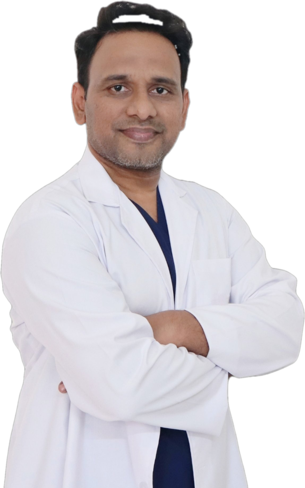

Precision in planning
No two faces, hands or bodies are alike. Every treatment begins with careful assessment and a plan tailored to the individual — never a one-size-fits-all protocol.
A surgeon-led practice built on a simple standard: precision and perfection — in planning, in technique, and in aftercare.

MBBS, DNB (Mumbai), M.Ch (Delhi), Gold Medalist
Plastic, Cosmetic, Hand & Microvascular Surgeon.
Dr Ashok Reddy trained at premier institutions — DNB in Mumbai and M.Ch in plastic surgery in Delhi, earning a Gold Medal — before establishing AR Plastic Surgery in Karimnagar to bring full-scope specialist care closer to home for Telangana's patients.
His practice spans the complete breadth of the specialty: cosmetic procedures such as hair transplantation, gynecomastia surgery and rhinoplasty; reconstructive work including burns, cleft repair and scar revision; and the demanding field of hand & microvascular surgery — tendon, nerve and artery repair under magnification.
No two faces, hands or bodies are alike. Every treatment begins with careful assessment and a plan tailored to the individual — never a one-size-fits-all protocol.
Elective or essential, every procedure is weighed for risk and benefit with you. If surgery is not the right answer, you will be told so.
What a procedure can and cannot achieve, how recovery really feels, and what results to reasonably expect — discussed openly before anything is decided.
AR Plastic Surgery is located at Opp Reddy gari vantillu, Court Chowrasta, Jyothinagar, Karimnagar, Telangana 505001, open Monday – Sunday, 10:00 AM – 8:00 PM. Patients travel to us from Karimnagar, Jagtial, Sircilla, Warangal, Siddipet, Peddapalli and Vemulawada, and nearby districts.
Every plan at AR Plastic Surgery starts with an honest consultation — what surgery can and cannot do, explained before anything is decided.